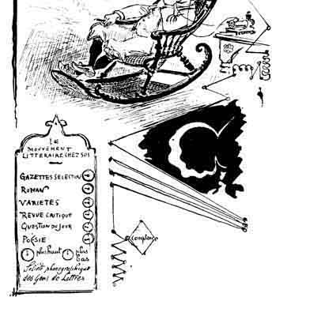
Suggestions d’avenir
LA FIN DES LIVRES
[Introduction, digitally modified images, and Abstract in English are Copyright 1999 by Michael Ward.]
The Project Gutenberg Etext of "The End of Books" ("La Fin
des Livres").
This is an HTML reprint of a story from the collection "Contes
pour les Bibliophiles" by Octave Uzanne and Albert Robida,
originally published in France in 1894.
Copyright laws are changing all over the world, be sure to check
the copyright laws for your country before posting these files!!
Please take a look at the important information in this header.
We encourage you to keep this file on your own disk, keeping an
electronic path open for the next readers. Do not remove this.
**Welcome To The World of Free Plain Vanilla Electronic Texts**
**Etexts Readable By Both Humans and By Computers, Since 1971**
*These Etexts Prepared By Hundreds of Volunteers and Donations*
Information on contacting Project Gutenberg to get Etexts, and
further information is included below. We need your donations.
Title: The End of Books
Title: La Fin des Livres
Author: Octave Uzanne and Albert Robida
September, 2001 [Etext #2820]
The Project Gutenberg Etext of "The End of Books"
*****This folder should be named "endofbooks-html"****
This etext was prepared by Michael J. Ward, San Jose, CA. The
Abstract in English (abstract.html) and the Introduction to the
work and the authors (index.html) were written by and are
copyrighted by the author Michael J. Ward, and are made
available at no charge to the Gutenberg project for distribution.
See http://www.hidden-knowledge.com/books/lafin for more
information on this book.
Project Gutenberg Etexts are usually created from multiple editions,
all of which are in the Public Domain in the United States, unless a
copyright notice is included. Therefore, we do NOT keep these books
in compliance with any particular paper edition, usually otherwise.
We are now trying to release all our books one month in advance
of the official release dates, for time for better editing.
Please note: neither this list nor its contents are final till
midnight of the last day of the month of any such announcement.
The official release date of all Project Gutenberg Etexts is at
Midnight, Central Time, of the last day of the stated month. A
preliminary version may often be posted for suggestion, comment
and editing by those who wish to do so. To be sure you have an
up to date first edition [xxxxx10x.xxx] please check file sizes
in the first week of the next month. Since our ftp program has
a bug in it that scrambles the date [tried to fix and failed] a
look at the file size will have to do, but we will try to see a
new copy has at least one byte more or less.
Information about Project Gutenberg (one page)
We produce about two million dollars for each hour we work. The
fifty hours is one conservative estimate for how long it we take
to get any etext selected, entered, proofread, edited, copyright
searched and analyzed, the copyright letters written, etc. This
projected audience is one hundred million readers. If our value
per text is nominally estimated at one dollar then we produce $2
million dollars per hour this year as we release thirty-two text
files per month: or 400 more Etexts in 1996 for a total of 800.
If these reach just 10% of the computerized population, then the
total should reach 80 billion Etexts.
The Goal of Project Gutenberg is to Give Away One Trillion Etext
Files by the December 31, 2001. [10,000 x 100,000,000=Trillion]
This is ten thousand titles each to one hundred million readers,
which is only 10% of the present number of computer users. 2001
should have at least twice as many computer users as that, so it
will require us reaching less than 5% of the users in 2001.
We need your donations more than ever!
All donations should be made to "Project Gutenberg/CMU": and are
tax deductible to the extent allowable by law. (CMU = Carnegie
Mellon University).
For these and other matters, please mail to:
Project Gutenberg
P. O. Box 2782
Champaign, IL 61825
When all other email fails try our Executive Director:
Michael S. Hart [hart@pobox.com]
We would prefer to send you this information by email
(Internet, Bitnet, Compuserve, ATTMAIL or MCImail).
******
If you have an FTP program (or emulator), please
FTP directly to the Project Gutenberg archives:
[Mac users, do NOT point and click. . .type]
ftp uiarchive.cso.uiuc.edu
login: anonymous
password: your@login
cd etext/etext90 through /etext96
or cd etext/articles [get suggest gut for more information]
dir [to see files]
get or mget [to get files. . .set bin for zip files]
GET INDEX?00.GUT
for a list of books
and
GET NEW GUT for general information
and
MGET GUT* for newsletters.
**Information prepared by the Project Gutenberg legal advisor**
(Three Pages)
***START**THE SMALL PRINT!**FOR PUBLIC DOMAIN ETEXTS**START***
Why is this "Small Print!" statement here? You know: lawyers.
They tell us you might sue us if there is something wrong with
your copy of this etext, even if you got it for free from
someone other than us, and even if what's wrong is not our
fault. So, among other things, this "Small Print!" statement
disclaims most of our liability to you. It also tells you how
you can distribute copies of this etext if you want to.
*BEFORE!* YOU USE OR READ THIS ETEXT
By using or reading any part of this PROJECT GUTENBERG-tm
etext, you indicate that you understand, agree to and accept
this "Small Print!" statement. If you do not, you can receive
a refund of the money (if any) you paid for this etext by
sending a request within 30 days of receiving it to the person
you got it from. If you received this etext on a physical
medium (such as a disk), you must return it with your request.
ABOUT PROJECT GUTENBERG-TM ETEXTS
This PROJECT GUTENBERG-tm etext, like most PROJECT GUTENBERG-
tm etexts, is a "public domain" work distributed by Professor
Michael S. Hart through the Project Gutenberg Association at
Carnegie-Mellon University (the "Project"). Among other
things, this means that no one owns a United States copyright
on or for this work, so the Project (and you!) can copy and
distribute it in the United States without permission and
without paying copyright royalties. Special rules, set forth
below, apply if you wish to copy and distribute this etext
under the Project's "PROJECT GUTENBERG" trademark.
To create these etexts, the Project expends considerable
efforts to identify, transcribe and proofread public domain
works. Despite these efforts, the Project's etexts and any
medium they may be on may contain "Defects". Among other
things, Defects may take the form of incomplete, inaccurate or
corrupt data, transcription errors, a copyright or other
intellectual property infringement, a defective or damaged
disk or other etext medium, a computer virus, or computer
codes that damage or cannot be read by your equipment.
LIMITED WARRANTY; DISCLAIMER OF DAMAGES
But for the "Right of Replacement or Refund" described below,
[1] the Project (and any other party you may receive this
etext from as a PROJECT GUTENBERG-tm etext) disclaims all
liability to you for damages, costs and expenses, including
legal fees, and [2] YOU HAVE NO REMEDIES FOR NEGLIGENCE OR
UNDER STRICT LIABILITY, OR FOR BREACH OF WARRANTY OR CONTRACT,
INCLUDING BUT NOT LIMITED TO INDIRECT, CONSEQUENTIAL, PUNITIVE
OR INCIDENTAL DAMAGES, EVEN IF YOU GIVE NOTICE OF THE
POSSIBILITY OF SUCH DAMAGES.
If you discover a Defect in this etext within 90 days of
receiving it, you can receive a refund of the money (if any)
you paid for it by sending an explanatory note within that
time to the person you received it from. If you received it
on a physical medium, you must return it with your note, and
such person may choose to alternatively give you a replacement
copy. If you received it electronically, such person may
choose to alternatively give you a second opportunity to
receive it electronically.
THIS ETEXT IS OTHERWISE PROVIDED TO YOU "AS-IS". NO OTHER
WARRANTIES OF ANY KIND, EXPRESS OR IMPLIED, ARE MADE TO YOU AS
TO THE ETEXT OR ANY MEDIUM IT MAY BE ON, INCLUDING BUT NOT
LIMITED TO WARRANTIES OF MERCHANTABILITY OR FITNESS FOR A
PARTICULAR PURPOSE.
Some states do not allow disclaimers of implied warranties or
the exclusion or limitation of consequential damages, so the
above disclaimers and exclusions may not apply to you, and you
may have other legal rights.
INDEMNITY
You will indemnify and hold the Project, its directors,
officers, members and agents harmless from all liability, cost
and expense, including legal fees, that arise directly or
indirectly from any of the following that you do or cause:
[1] distribution of this etext, [2] alteration, modification,
or addition to the etext, or [3] any Defect.
DISTRIBUTION UNDER "PROJECT GUTENBERG-tm"
You may distribute copies of this etext electronically, or by
disk, book or any other medium if you either delete this
"Small Print!" and all other references to Project Gutenberg,
or:
[1] Only give exact copies of it. Among other things, this
requires that you do not remove, alter or modify the
etext or this "small print!" statement. You may however,
if you wish, distribute this etext in machine readable
binary, compressed, mark-up, or proprietary form,
including any form resulting from conversion by word pro-
cessing or hypertext software, but only so long as
*EITHER*:
[*] The etext, when displayed, is clearly readable, and
does *not* contain characters other than those
intended by the author of the work, although tilde
(~), asterisk (*) and underline (_) characters may
be used to convey punctuation intended by the
author, and additional characters may be used to
indicate hypertext links; OR
[*] The etext may be readily converted by the reader at
no expense into plain ASCII, EBCDIC or equivalent
form by the program that displays the etext (as is
the case, for instance, with most word processors);
OR
[*] You provide, or agree to also provide on request at
no additional cost, fee or expense, a copy of the
etext in its original plain ASCII form (or in EBCDIC
or other equivalent proprietary form).
[2] Honor the etext refund and replacement provisions of this
"Small Print!" statement.
[3] Pay a trademark license fee to the Project of 20% of the
net profits you derive calculated using the method you
already use to calculate your applicable taxes. If you
don't derive profits, no royalty is due. Royalties are
payable to "Project Gutenberg Association/Carnegie-Mellon
University" within the 60 days following each
date you prepare (or were legally required to prepare)
your annual (or equivalent periodic) tax return.
WHAT IF YOU *WANT* TO SEND MONEY EVEN IF YOU DON'T HAVE TO?
The Project gratefully accepts contributions in money, time,
scanning machines, OCR software, public domain etexts, royalty
free copyright licenses, and every other sort of contribution
you can think of. Money should be paid to "Project Gutenberg
Association / Carnegie-Mellon University".
We are planning on making some changes in our donation structure
in 2000, so you might want to email me, hart@pobox.com beforehand.
*END*THE SMALL PRINT! FOR PUBLIC DOMAIN ETEXTS*Ver.04.29.93*END*
|
The End Of Books A prognostication from the past |
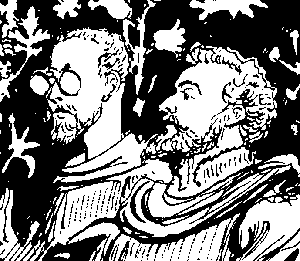 |
|
Introduction In 1895 Octave Uzanne and Albert Robida published, in France, Contes pour les Bibliophiles ("Stories for Bibliophiles"). The eleven stories in Contes, all revolving around books (or at least printing) are interesting, bizarre, weird... one could go on in true Fanthorpian fashion. But even better than the stories are the illustrations by Albert Robida. Robida was born in 1848 and died in 1926. During his lifetime he reportedly drew 60,000 pictures and wrote and/or illustrated over 200 books. His first published work came out in 1866, and he appeared in "La Vie Parisienne," as well as journals less well-known to the world outside France. One of his works, La Guerre au XXe Siècle (1887) is of some interest in the field of science-fictional treatments of future wars, and is the subject of current papers and a critical edition by I. F. Clarke in Britain. Robida is forgotten (or was never known) in America, but in France he is remembered. His sketches and caricatures, particularly of humorous and satirical visions of what lay in the future, were decades ahead of their time. Disney adopted some of his drawings as backgrounds for their views of the future at a pavilion at Epcot, and web sites attempt today to bring some of his best work back into circulation. If Robida is mostly forgotten, Uzanne can be truly said to have vanished from the cultural consciousness of the world. Yet he was well known as a writer and critic of his day, and some of his works command high prices from rare-book dealers. One presumes that much of his work was more bound to the circumstances of the current day than were the drawings of Robida, whose art has a certain timelessness to it (even where it graphically predicts a future that demonstrably did not happen). What follows is one of the pieces from Contes. Writing and drawing in 1894, Uzanne and Robida give us predictions of a post-literate society. Music and speech are everywhere! Newspapers are forgotten, and news presenters are valued for their emotional tone instead of the accuracy of their reporting. Recordings combined with cinema present costumed drama and humor in the home. (This is 1894, remember; Edison had truly just begun to produce his films.) Printed books are over and done with! They are no longer needed. As some companies (Hidden Knowledge, for example) begin to create electronic books that will never be published in printed form, we need to remember... it was all predicted more than a hundred years ago. 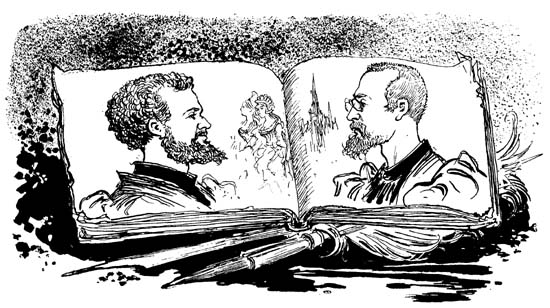 |
Notes on the re-creation of "The End of Books"
|
The original drawings in the collection Contes pour les Bibliophiles were scanned as black-and-white drawings at 600 dpi, and cleaned up in Photoshop. The drawings were extracted and processed individually to reduce their file size and improve their visual presentation on computer screens. The text was run through Textbridge 9, which did a surprisingly good job at OCR. The HTML layout merges the recovered text and the processed images back together again, and is designed to approximate that of the original. It is impossible to imitate it exactly, for all browser configurations, in HTML. You can do it in PDF; we looked at conversion to PDF but decided to keep things simple. One hopes also that future XML layout tools will provide this capability. The original is in French, and providing a proper translation is outside the scope of this project. I wrote a summary in English for those us of who do not have the French language. Or see the "Scribner's Magazine" references below. I have no idea what was originally written as the last word in the caption of the drawing of Gutenberg and the devil. It appears to have been scratched off the printing plate. Contes pour les Bibliophiles was noted in "The Century Magazine" (May, 1895, page 354 ff.) in a review section on "Books in Paper Covers." I say noted; but actually, only the cover was reviewed. The cover was reproduced in a photoengraving in "Century" and its artistic values were denigrated; the contents apparently remained unread. Perhaps they were unhappy because Uzanne ocasionally appeared in English in "Scribner's Magazine", which competed fiercely with "Century". |
If anyone knows of contemporary reviews of Contes or "La Fin des Livres" I would much appreciate it if you would send me email about them. The story itself appeared in a clumsy English translation in "Scribner's", Vol. 16 (1894), pp 221-231, with illustrations by Robida — some the same as those in the collection Contes, and some different. A few of those used in both places were printed more clearly in the magazine, but most were reproduced badly in the magazine and are clearer in the collection Contes. The page images are on the web in both JPEG and GIF format at Dave Price's website at Oxford Another place to see this on the web, with a different set of JPEG images of the "Scribner's" pages, is at the University of Kent at Canterbury, which also has an HTML of the whole piece with the artwork located in approximately the right places (but of questionable size), and an HTML version with the art left out. A fabulous resource for anyone interested in the history of American magazines (or American history in general) is the MOA project at Cornell. They have put up on the web full-page images of the complete editorial contents of long runs of 19C magazines. "Scribner's" is included; at MOA you can see what else was in the same issue with this piece. Unfortunately, their reproduction of the i llustrations is very bad, either because of their imaging methodology or because they were working from bad microforms. Also, it has always been common for libraries to discard the covers and ads from magazines before binding them, to save money and shelf space. Today we find the ads and cover illustrations generally more interesting than the stories and features. Most of the volumes at MOA lack the ads and covers. Such is life. |
|
"Albert Robida's Imperfect Future" in "History Today," July 1998. (I have not yet seen this article myself.) A page describing the "Association of the Friends of Albert Robida", (Les Amis) with links to some of his drawings on the web. Web pages discussing Robida and linking to more pages of his futuristic drawings (some of the illustrations will be familiar to the readers of "La Fin des Livres"): (in English), and the same pages in the original French. Some interesting pages at pansophist.com display Albert Robida illlustrations, as used by Disney at the recently closed Horizons pavilion (1983-99) at Epcot: Introduction and Follow-on. |
A different piece by Uzanne, also from "Scribner's", (1892, p. 558) can also be found at the MOA project: "Conversations and Opinions of Victor Hugo - from Unpublished Papers Found at Guernsey". Yet another is "The Arts Relating to Women, and their Exhibition in Paris" (Vol. 13 (1893), page 503). You should be able to go directly to the "Scribner's" volumes at MOA. All of the URL's given above are subject to sudden and unexpected change! The web is dynamic, changing, upredictable, and sometimes unreliable. They were tested, updated, and working correctly on 31 July 2000. Copyright 1999, 2000 by Michael Ward |
|
London. Bibliophiles and scholars, inspired by a lecture at the Royal Institution, in which the eminent physicist Sir William Thompson discussed the life and death of the sun, convene after the lecture at a gentlemen's club and discuss what they think the future will hold. James Wittmore considered the rise and fall of continental powers. Julius Pollok predicted the futures of foods and the eradication of hunger; a green Eden that humorist John Pool laughed at as contrary to the rule that one must devour or be devoured. Arthur Blackcross decried the miserable state of current painting and sculpture, but predicted that in the future it would become great, done by a small number of talents, with color photographs and photoengravings satisfying the masses. But what of the future of books? The narrator argues that Gutenberg's invention will soon disappear. Reading causes lassitude and wearies us tremendously. Words through the speaking tube, however, give us a special vibrancy. The gramophone will destroy printed works. Our eyes are easily damaged, but our ears are strong. But, his listeners object, gramophones are heavy and the cylinders easily damaged. This will be taken care of; new models will be built which will fit in the pocket; the precision of watchmaking will be applied to them. Devices will collect electricity from the movements of the individual, which will power the gramophones. The author will become his own editor. In order to avoid imitations and counterfeits, he will deposit his voice at the Patent Office. Instead of famous men of letters, we will have famous narrators. The art of diction will become extremely important. The ladies will no longer say that they like an author's style, but that his voice is so charming, so serious, that he leaves you full of emotion after listening to his work: it is an incomparable ravishment of the ear. The libraries will be become phonographoteques. They will house famous works by artists in vogue, such as Coquelin's performance of Moliere, Irving's Shakespeare, Salvini's Dante, etc. Bibliophiles will become phonographophiles, and collect cylinders with the unique example of the voice of a Master of the theater, poetry or music, or those with new and unknown alternate versions of a famous work. Narrators will do comic pieces, sound effects, and dialects like Irishmen and American Westerners. At the crossroads of all cities, there will be kiosks where the passerby can put in a penny and hear the works of Dickens, Dumas Sr. or Longfellow. The author can carry his works to buildings on the street, where multiple pipes will carry his words to all the windows for the people to listen. At four or five cents per hour, even the poor can afford this, and the wandering author will still make money because of the number of listeners at each house. Our grandchildren will use phonographs everywhere; at every restaurant table, public transportation, steamship cabins, and hotel rooms; railroads will supply Pullman circulating libraries which will make travelers forget the distances they cover, while allowing them to look out the windows. Printing will be abandoned, except for a small possible use in trade and private communication. The newspaper will go the same way, because no one will be satisfied with the printed word if they can hear what was actually said, the current songs, the voices of the divas. The post office will bring cylinders each morning to the subscribers; the servants will lay them out so the Master and the Mistress can hear the news, telegrams, stock exchange prices, whimsical articles. Journalism will be transformed, with the best places reserved for the solid young men with warm, strong voices, whose art will be in the pronunciation rather than in the style or form of the written sentences. While literary mandarinism will not disappear, it will be for a negligible number of listeners. The newspaper offices will have enormous "spoking halls" [sic] where the writers will record the news aloud; the telephonic dispatches will be transferred automatically. The resulting cylinders will be stereotyped in great number and put into the post office before 3:00 am., except that if it can be arranged with the telephone companies the newspaper will be carried directly by wire to the ears of the subscribers. Blackcross objects to the loss of illustrations when books disappear. Ah! the Kinetograph of Thomas Edison, which the narrator saw the first tests of, when he visited New Jersey, will record the movements of the man as the gramophone records the voice. Within a few years this will illustrate everyday life. We will have these in our residences; the scenes of fiction and adventure novels will be performed by well-costumed actors. We will also have current events, to complement the phonographic newspaper. Finally, just as eye-doctors multiplied when Journalism was invented, in the same way in the future ear specialists will prosper. Books must disappear, or they will ruin us. In the whole world there are eighty to a hundred thousand books published each year, and at a thousand copies each this is more than one hundred million specimens, of which the majority contain only trash and errors. How happy we will be not to have to read any more; to be able finally to close our eyes! Hamlet, of our beloved Will, could not have said it any better ... Words! Words! Words! ...words which will pass and which no one will read any more. Copyright 1999, 2000 by Michael Ward 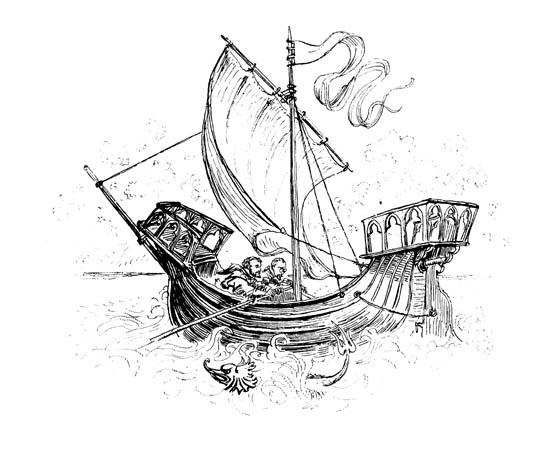 |
| 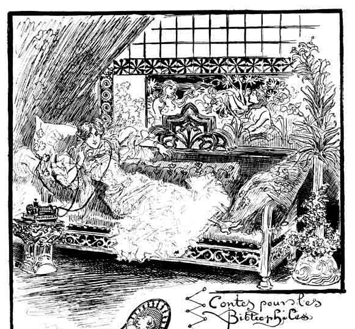 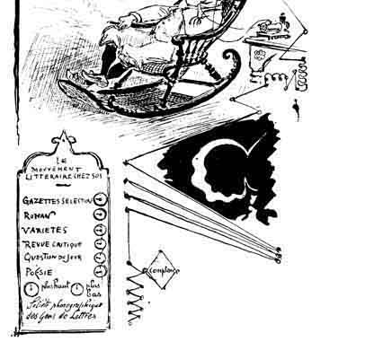 Suggestions d’avenir
|
|
Ce fut, il y a deux ans environ, à Londres, que cette question de la fin des Livres et de leur complète transformation fut agitée en un petit groupe de Bibliophiles et d’érudits, au cours d’une soirée mémorable dont le souvenir restera sûrement gravé dans la mémoire de chacun des assistants. Nous nous étions rencontrés, ce soir-là, — qui se trouvait être un des vendredis scientifiques de la Royale Institution, — à la conférence de sir William Thompson, l’éminent physicien anglais, professeur à l’Université de Glascow, dont le nom est connu des deux mondes depuis la part qu’il prit à la pose du premier câble transatlantique. Devant un auditoire brillant de savants et de gens du monde, sir William Thompson avait annoncé que mathématiquement la fin du globe terrestre et de la race humaine devait se produire au juste dans dix millions d’années. |
|
Se basant sur les théories de Helmholtz que le soleil est une vaste sphère en train de se refroidir, c’est-à-dire de se contracter par l’effet de la gravité sur la masse à mesure que ce refroidissement se produit, sir William, après avoir estimé la chaleur solaire à celle qui serait nécessaire pour développer une force de 476,000 millions de chevaux-vapeur par mètre carré superficiel de sa photosphère, avait établi que le rayon de la photosphère se raccourcit d’un centième environ en 2,000 ans et que l’on pouvait fixer l’heure précise où la température deviendrait insuffisante pour entretenir la vie sur notre planète. Le maître physicien nous avait non moins surpris en abordant la question de l’ancienneté de la terre, dont il développait la thèse ainsi qu’un problème de mécanique pure ; il ne lui attribuait point un passé supérieur à une vingtaine de millions d’années, en dépit des géologues et des naturalistes, et il montrait la vie venant à la terre dès la naissance du soleil, quelle qu’ait été l’origine de cet astre fécondant, soit par le résultat de l’éclatement d’un monde préexistant, soit par celui de la con-densation de nébuleuses antérieurement diffuses. |
|
Nous étions sortis de la Royale Institution très émus par les grands problèmes que le savant professeur de Glascow s’était efforcé de résoudre scientifiquement devant son auditoire, et, l’esprit endolori, presque écrasé par l’énormité des chiffres avec lesquels sir William Thompson avait jonglé, nous revenions, silencieux, en un groupe de huit personnages différents, philologues, historiens, journalistes, statisticiens et simples curieux mondains, marchant deux par deux, le long d’Albemarle street et de Piccadilly. L’un de nous, Edward Lembroke, nous entraîna à souper au Junior Athenaeum Club et, dès que le champagne eut dégourdi les cerveaux songeurs, ce fut à qui parlerait de la conférence de sir William Thompson et des destinées futures de l’humanité. |
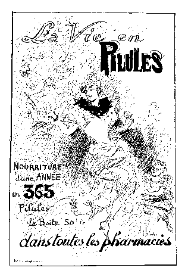 |
|
James Wittmore se préoccupa longuement de la prédominance intellectuelle et morale des jeunes continents sur les anciens, vers la fin du siècle prochain. Il laissa entendre que le vieux monde abdiquerait peu à peu son omnipotence et que l’Amérique prendrait la tête du mouvement dans la marche du progrès, tandis que l’Océanie, à peine née d’hier, se développerait superbement, démasquerait ses ambitions et occuperait une des premières places dans le concert universel des peuples. L’Afrique, ajoutait-il, cette Afrique toujours explorée et toujours mystérieuse, dont on découvre à chaque instant des contrées de milliers de milles carrés, conquise, si péniblement à la civilisation, malgré son immense réservoir d’hommes, ne semble pas appelée à jouer un rôle proéminent; ce sera le grenier d’abondance des autres continents, il se jouera sur son sol, tour à tour envahi par différents peuples, des parties peu décisives. Les masses d’hommes, dans leur violente envie de posséder cette terre vierge, s’y rencontreront, s’y battront et y mourront, mais la civilisation et le progrès ne s’y installeront que dans des milliers d’années, alors que la prospérité des États-Unis sera sur son déclin et que de nouvelles et fatales évolutions assigneront un nouvel habitat aux ensemencements du génie humain. Julius Pollok, un doux végétarien et savant naturaliste, se plut à imaginer ce qu’il adviendrait des moeurs humaines, quand, grâce à la chimie et à la réalisation des recherches actuelles, l’état de notre vie sociale sera transformé et que notre nourriture, dosée sous forme de poudres, de sirops, d’opiats, de biscuits, tiendra en un petit volume. Alors plus de boulangers, de bouchers, de marchands de vin, plus de restaurants, plus d’épiciers, quelques droguistes, et chacun libre, heureux, susceptible de subvenir à ses besoins pour quelques sous; la faim biffée du registre de nos misères, la nature rendue à elle-même, toute la surface de notre planète verdoyante ainsi qu’un immense jardin rempli d’ombrages, de fleurs et de gazons, au milieu duquel les océans seront comparables à de vastes pièces d’eau d’agrément que d’énormes steamers hérissés de roues et d’hélices parcourront à des vitesses de cinquante et soixante noeuds, sans crainte de tangage ou de roulis. Le cher rêveur, poète en sa manière, nous annonçait ce retour à l’âge d’or et aux moeurs primitives, cette universelle résurrection de l’antique vallée de Tempé pour la fin du XXe siècle ou le début du XXIe. Selon lui, les idées chères à lady Tennyson triompheraient à brève échéance, le monde cesserait d’être un immonde abattoir de bêtes paisibles, un affreux charnier dressé pour notre gloutonnerie et deviendrait un jardin délicieux consacré à l’hygiène et aux plaisirs des yeux. La vie serait respectée dans les êtres et dans les plantes, et dans ce nouveau paradis retrouvé ainsi qu’en un Musée des Créations de Dieu, on pourrait inscrire partout cet avis au promeneur: Prière de ne pas toucher. La prédiction idéaliste de notre ami Julius Pollok n’eut qu’un succès relatif; on reprocha à son programme un peu de monotonie et un excès de religiosité panthéiste; il sembla à quelques-uns qu’on s’ennuierait ferme dans son Eden reconstruit, au bénéfice du capital social de tout l’Univers, et l’on vida quelques verres de champagne de plus afin de dissiper la vision de cet avenir lacté rendu aux pastorales, aux géorgiques, à toutes les horreurs de la vie inactive et sans lutte. « Utopie que tout cela ! S’écria même l’humoriste John Pool; les animaux, mon cher Pollok, ne suivront pas votre progrès de chimiste et continueront à s’entre-dévorer selon les lois mystérieuses de la création; la mouche sera toujours le vautour du microbe, de même que l’oiseau le plus inoffensif est l’aigle de la mouche, le loup s’offrira encore des gigots de moutons et la paisible brebis continuera comme par le passé à être la panthère de l’herbe. Suivons la loi commune qui régit l’évolution du monde et, en attendant que nous soyons dévorés, dévorons. » |
|
Arthur Blackcross, peintre et critique d’art mystique, ésotérique et symboliste, esprit très délicat et fondateur de la déjà célèbre École des Esthètes de demain, fut sollicité de nous exprimer ce qu’il pensait devoir advenir de la peinture d’ici un siècle et plus. Je crois pouvoir résumer exactement son petit discours dans les quelques lignes qui suivent: |
|
« Ce que nous appelons l’Art moderne est-il vraiment un art, et le nombre d’artistes sans vocation qui l’exercent médiocrement avec apparence de talent ne démontre-t-il pas suffisamment qu’il est plutôt un métier où l’âme créatrice fait détaut ainsi que la vision? — Peut-on donner le nom d’oeuvres d’art aux cinq-sixièmes des tableaux et statues qui encombrent nos salons annuels, et compte-t-on vraiment beaucoup de peintres ou de statuaires qui soient des créateurs originaux? « Nous ne voyons que des copies de toute sorte: copies des vieux maîtres accommodés au goût moderne, reconstitutions toujours fausses d’époques à jamais disparues, copies banales de la nature vue avec un oeil de photographe, copies méticuleuses et mosaïquées fournissant ces affreux petits sujets de genre qui ont illustré Meissonier, rien de neuf, rien qui nous sorte de notre humanité ! Le devoir de l’art, cependant, que ce soit par la musique, la poésie ou la peinture, est de nous en sortir à tout prix et de nous faire planer un instant dans des sphères irréelles où nous puissions faire comme une cure d’aérothérapie idéaliste. |
|
« Je crois donc, continua Blackcross, que l’heure est proche où l'Univers entier sera saturé de tableaux, paysages mornes, figures mythologiques, épisodes historiques, natures mortes et autres oeuvres quelconques dont les nègres mêmes ne voudront plus; ce sera le moment béni où la peinture mourra de faim; les gouvernements comprendront peut-être enfin la lourde folie qu’ils ont commise en ne décourageant pas systématiquement les arts, ce qui est la seule façon pratique de les protéger en les exaltant. Dans quelques pays résolus à une réforme générale, les idées des iconoclastes prévaudront; on brûlera les musées pour ne pas influencer les génies naissants, on proscrira la banalité sous toutes ses formes, c’est-à-dire la reproduction de tout ce qui nous touche, de tout ce que nous voyons, de tout ce que l’illustration, la photographie ou le théâtre peut nous exprimer d’une façon suffisante, et l’on poussera l’art, enfin rendu à sa propre essence, vers les régions élevées où nos rêveries cherchent toujours des voies, des figures et des symboles. « L’art sera appelé à exprimer les choses qui semblent intraduisibles, à éveiller en nous, par la gamme des couleurs, des sensations musicales, à atteindre notre appareil cérébral dans toutes ses sensibilités même les plus insaisissables, à envelopper nos multiformes voluptés esthétiques d’une ambiance exquise, à faire chanter dans un accord rationnel toutes les sensations de nos organes les plus délicats; il violentera le mécanisme de notre pensée et s’efforcera de renverser quelques-unes de ces barrières matérielles qui emprisonnent notre intelligence, esclave des sens qui la font vivre. |
|
« L’art sera alors une aristocratie fermée; la production sera rare, mystique, dévote, supérieurement personnelle. Cet art comprendra peut-être dix à douze apôtres par chaque génération et, qui sait! une centaine au plus de disciples fervents. « En dehors de là, la photographie en couleur, la photogravure, l’illustration documentée suffiront à la satisfaction populaire. Mais les salons étant interdits, les paysagistes ruinés par la photopeinture, les sujets d’histoire étant posés désormais par des modèles suggestionnés, exprimant à la volonté de l'opérateur la douleur, l’étonnement, l’accablement, la terreur ou la mort, toute la peinturographie en un mot devenant une question de procédés mécaniques très divers et très exacts, comme une nouvelle branche commerciale, il n’y aura plus de peintres au XXIe siècle, il y aura seulement quelques saints hommes, véritables fakirs de l’idée et du beau qui, dans le silence et l’incompréhension des masses, produiront des chefs-d’oeuvre dignes de ce nom. » Arthur Blackcross développa lentement et minutieusement sa vision d’avenir, non sans succès, car notre visite à la Royale Académie n’avait guère été, cette année-là, plus réconfortante que celles faites à Paris à nos deux grands bazars de peinture nationale, soit au Champ de Mars, soit aux Champs-Élysées. On épilogua quelque temps sur les idées générales exposées par notre convive symboliste, et ce fut le fondateur lui-même de l’École des Esthètes de demain qui changea le cours de la conversation en m’apostrophant brusquement: « Eh bien! mon cher bibliophile, ne parlez-vous pas à votre tour; ne nous direz-vous pas ce qu’il adviendra des lettres, des littérateurs et des livres d’ici quelque cent ans ? — Puisque nous réformons ce soir à notre guise la société future, apportant chacun un rayon lumineux dans la sombre nuit des siècles à venir, éclairez- nous de votre propre phare tournant, projetez votre lueur à l’horizon. » Ce furent des : « Oui ! oui. . . » des sollicitations pressantes et cordiales, et, comme nous étions en petit comité, qu’il faisait bon s’écouter penser et que l’atmosphère de ce coin de club était chaude, sympathique et agréable, je n’hésitai pas à improviser ma conférence. La voici: « Ce que je pense de la destinée des livres, mes chers amis. « La question est intéressante et me passionne d’autant plus que je ne me l’étais jamais posée jusqu’à cette heure précise de notre réunion. « Si par livres vous entendez parler de nos innombrables cahiers de papier imprimé, ployé, cousu, broché sous une couverture annonçant le titre de l’ouvrage, je vous avouerai franchement que je ne crois point, — et que les progrès de l’électricité et de la mécanique moderne m’interdisent de croire, — que l’invention de Gutenberg puisse ne pas tomber plus ou moins prochainement en désuétude comme interprète de nos productions intellectuelles. « L’imprimerie que Rivarol appelait si judicieusement « l’artillerie de « la pensée » » et dont Luther disait qu’elle est le dernier et le suprême don par lequel Dieu avance les choses de l’Évangile, l’Imprimerie qui a changé le sort de l’Europe et qui, surtout depuis deux siècles, gouverne l’opinion, par le livre, la brochure et le journal; l’imprimerie qui, àdater de 1436, régna si despotiquement sur nos esprits, me semble menacée de mort, à mon avis, par les divers enregistreurs du son qui ont été récemment découverts et qui peu à peu vont largement se perfectionner. |
|
« Malgré les progrès énormes apportés successivement dans la science des presses, en dépit des machines à composer faciles à conduire et qui fournissent des caractères neufs fraîchement moulés dans des matrices mobiles, il me paraît que l’art où excellèrent successivement Fuster, Schoeffer, Estienne et Vascosan, Alde Manuce et Nicolas Jenson, a atteint à son apogée de perfection, et que nos petits-neveux ne confieront plus leurs ouvrages à ce procédé assez vieillot et en réalité facile à remplacer par la phonographie encore à ses débuts. » Ce fut un toile d’interruptions et d’interpellations parmi mes amis et auditeurs, des: oh! étonnés, des: ah! ironiques, des: eh! eh! remplis de doute et, se croisant, de furieuses dénégations : « Mais c’est impossible!... Qu’entendez-vous par là? » J’eus quelque peine à reprendre la parole pour m’expliquer plus à loisir. « Laissez-moi vous dire, très impétueux auditeurs, que les idées que je vais vous exposer sont d’autant moins affirmatives qu’elles ne sont |
| 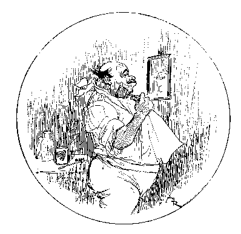 |
aucunement mûries par la réflexion et que je
vous les sers telles qu’elles m’arrivent, avec une
apparence de paradoxe; mais il n’y a guère que les
paradoxes qui contiennent des vérités, et les plus
folles prophéties des philosophes du XVIIIe siècle
se sont aujourd’hui déjà en partie
réalisées.
« Je me base sur cette constatation indéniable que l’homme de loisir repousse chaque jour davantage la fatigue |
| et qu’il recherche avidement ce qu’il appelle le
confortable, c’est-à-dire toutes les occasions de
ménager autant que possible la dépense et le jeu de
ses organes. Vous admettrez bien avec moi que la lecture, telle
que nous la pratiquons aujourd’hui, amène vivement
une grande lassitude, car non seulement elle exige de notre
cerveau une attention soutenue qui consomme une forte partie de
nos phosphates cérébraux, mais encore elle ploie
notre corps en diverses attitudes lassantes. Elle nous force, si
nous lisons un de vos grands journaux, format du Times,
à déployer une certaine habileté dans
l’art de retourner et de plier les feuilles; elle
surmène nos muscles tenseurs, si nous tenons le papier
largement ouvert; enfin, si c’est au livre que nous nous
adressons, la nécessité de couper les feuillets, de
les chasser tour àtour l’un sur l’autre
produit, par menus heurts successifs, un énervement
très troublant à la longue.
« Or, l’art de se pénétrer de l’esprit, de la gaieté et des idées d’autrui demanderait plus de passivité ; c’est ainsi que dans la conversation notre cerveau conserve plus d’élasticité, plus de netteté de perception, plus de béatitude et de repos que dans la lecture, car les paroles qui nous sont transmises par le tube auditif nous donnent une vibrance spéciale des cellules qui, par un effet constaté par tous les physiologistes actuels et passés, excite nos propres pensées. « Je crois donc au succès de tout ce qui flattera et entretiendra la paresse et l’égoïsme de l’homme; l’ascenseur a tué les ascensions dans les maisons; le phonographe détruira probablement l’imprimerie. Nos yeux sont faits pour voir et refléter les beautés de la nature et non pas pour s’user à la lecture des textes; il y a trop longtemps qu’on en abuse, et il n’est pas besoin d’être un savant ophtalmologiste pour connaître la série des maladies qui accablent notre vision et nous astreignent à emprunter les artifices de la science optique. « Nos oreilles, au contraire, sont moins souvent mises à contribution; elles s’ouvrent à tous les bruits de la vie, mais nos tympans demeurent moins irrités; nous ne donnons pas une excessive hospitalité dans ces golfes ouverts sur les sphères de notre intelligence, et il me plaît d’imaginer qu’on découvrira bientôt la nécessité de décharger nos yeux pour charger davantage nos oreilles. Ce sera une équitable compensation apportée dans notre économie physique générale. » « Très bien, très bien! » soulignaient mes camarades attentifs. « Mais la mise en pratique, cher ami, nous vous attendons là. Comment supposez-vous qu’on puisse arriver à construire des phonographes à la fois assez portatifs, légers et résistants pour enregistrer sans se détraquer de longs romans qui, actuellement, contiennent quatre, cinq cents pages ; sur quels cylindres de cire durcie clicherez-vous les articles et nouvelles du journalisme; enfin, à l’aide de quelles piles actionnerez-vous les moteurs électriques de ces futurs phonographes ? Tout cela est à expliquer et ne nous paraît pas d’une réalisation aisée. » « Tout cela cependant sefera, repris-je; il y aura des cylindres inscripteurs légers comme des porte-plumes en celluloïd, qui contiendront cinq et six cents mots et qui fonctionneront sur des axes très ténus qui tiendront dans la poche; toutes les vibrations de la voix y seront reproduites; on obtiendra la perfection des appareils comme on obtient la précision des montres les plus petites et les plus bijoux; quant à l’électricité, on la trouvera souvent sur l’individu même, et chacun actionnera avec facilité par son propre courant fluidique, ingénieusement capté et canalisé, les appareils de poche, de tour de cou ou de bandoulière qui tiendront dans un simple tube semblable à un étui de lorgnette. « Pour le livre, ou disons mieux, car alors les livres auront vécu, pour le novel ou storyographe, l’auteur deviendra son propre éditeur, afin d’éviter les imitations et contrefaçons ; il devra préalablement se rendre au Patent Office pour y déposer sa voix et en signer les notes basses et hautes, en donnant des contre-auditions nécessaires pour assurer les doubles de sa consignation. « Aussitôt cette mise en règle avec la loi, l’auteur parlera son oeuvre et la clichera sur des rouleaux enregistreurs et mettra en vente lui-même ses cylindres patentés, qui seront livrés sous enveloppe à la consomma-tion des auditeurs. « On ne nommera plus, en ce temps assez proche, les hommes de lettres des écrivains, mais plutôt des narrateurs; le goût du style et des phrases pompeusement parées se perdra peu à peu, mais l’art de la diction prendra des proportions invraisemblables; il y aura des narrateurs très recherchés pour l’adresse, la sympathie communicative, la chaleur vibrante, la parfaite correction et la ponctuation de leurs voix. |
|
« Les dames ne diront plus, parlant d’un auteur à succès : « J’aime tant sa façon d’écrire!» Elles soupireront toutes frémissantes: « Oh! ce diseur a une voix qui pénètre, qui charme, qui émeut; ses notes graves sont adorables, ses cris d’amours déchirants; il vous laisse toute brisée d’émotion après l’audition de son oeuvre : c’est un ravisseur d’oreille incomparable. » |
|
L’ami James Wittmore m’interrompit: « Et les bibliothèques, qu’en ferez-vous, mon cher ami des livres ? » « Les bibliothèques deviendront les phonographothèques ou bien les clichéothèques. Elles contiendront sur des étages de petits casiers successifs, les cylindres bien étiquetés des oeuvres des génies de l’humanité. Les éditions recherchées seront celles qui auront été autophonographiées par des artistes en vogue : on se disputera, par exemple, le Molière de Coquelin, |
| le Shakespeare d’Irving, le Dante de Salvini, le Dumas fils d’Éléonore Duce, le Hugo de Sarah Bernhardt, le Balzac de Mounet Sully, tandis que Goethe, Milton, Byron, Dickens, Emerson, Tennyson, Musset et autres auront été vibrés sur cylindres par des diseurs de choix. |
|
« Les bibliophiles, devenus les phonographophiles, s’entoureront encore d’oeuvres rares; ils donneront comme auparavant leurs cylindres à relier en des étuis de maroquin ornés de dorures fines et d’attributs symboliques. Les titres se liront sur la circonférence de la boîte et les pièces les plus rares contiendront des cylindres ayant enregistré à un seul exemplaire la voix d’un maître du théâtre, de la poésie ou de la musique ou donnant des variantes imprévues et inédites d’une oeuvre célèbre. « Les narrateurs, auteurs gais, diront le comique de la vie courante, s’applique-ront à rendre les bruits qui accompagnent et ironisent parfois, ainsi qu’en une orchestration de la nature, les échanges de conversations banales, les sursauts joyeux des foules assemblées, |
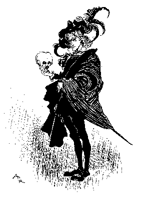 |
| les dialectes étrangers ; les évocations de
marseillais ou d’auvergnat amuseront les Français
comme le jargon des Irlandais et des Westermen excitera le rire
des Américains de l’Est.
« Les auteurs privés du sentiment des harmonies de la voix et des flexions nécessaires à une belle diction emprunteront le secours de gagistes, acteurs ou chanteurs pour emmagasiner leur oeuvre sur les complaisants cylindres. Nous avons aujourd’hui nos secrétaires et nos copistes; il y aura alors des phonistes et des clamistes, interprétant les phrases qui leur seront dictées par les créateurs de littératures. « Les auditeurs ne regretteront plus le temps où on les nommait lecteurs ; leur vue reposée, leur visage rafraîchi, leur nonchalance heureuse indiqueront tous les bienfaits d’une vie contemplative. « Étendus sur des sophas ou bercés sur des rocking-chairs, ils jouiront, silencieux, des merveilleuses aventures dont des tubes flexibles apporteront le récit dans leurs oreilles dilatées par la curiosité. « Soit à la maison, soit à la promenade, en parcourant pédestrement les sites les plus remarquables et pittoresques, les heureux auditeurs éprouveront le plaisir ineffable de concilier l’hygiène et l’instruction, d’exercer en même temps leurs muscles et de nourrir leur intelligence, car il se fabriquera des phono-opéragraphes de poche, utiles pendant l’excursion dans les montagnes des Alpes ou à travers les Cañons du Colorado. — Votre rêve est très aristocratique, insinua l’humanitaire Julius Pollok; l’avenir sera sans aucun doute plus démocratique. J’aimerais, je vous l’avoue, à voir le peuple plus favorisé. — Il le sera, mon doux poète, repris-je allégrement, en continuant à développer ma vision future, rien ne manquera au peuple sur ce point; il pourra se griser de littérature comme d’eau claire, à bon compte, car il aura ses distributeurs littéraires des rues comme il a ses fontaines. |
|
« A tous les carrefours des villes, des petits édifices s’élèveront autour desquels pendront, à l’usage des passants studieux, des tuyaux d’audition correspondant à des oeuvres faciles à mettre en action par la seule pression sur un bouton indicateur. ?D’autre part, des sortes d’automatic libraries, mues par le déclenchement opéré par le poids d’un penny jeté dans une ouverture, donneront pour cette faible somme les oeuvres de Dickens, de Dumas père ou de Longfellow, contenues sur de longs rouleaux faits pour être actionnés à domicile. « Je vais même au delà: l’auteur qui voudra exploiter personnellement ses oeuvres à la façon des trouvères du moyen âge et qui se plaira à les colporter de maison en maison pourra en tirer un bénéfice modéré et toutefois rémunérateur en donnant en location à tous les habitants d’un même immeuble une infinité de tuyaux qui partiront de son magasin d’audition, sorte d’orgue porté en sautoir pour parvenir par les fenêtres ouvertes aux oreilles des locataires désireux un instant de distraire leur loisir ou d’égayer leur solitude. « Moyennant quatre ou cinq cents par heure, les petites bourses, avouez-le, ne seront pas ruinées et l’auteur vagabond encaissera des droits relativement importants par la multiplicité des auditions fournies à chaque maison d’un même quartier. |
| 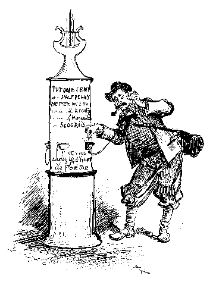 |
« Est-ce tout?. .. non pas encore, le phonographisme futur s’offrira à nos petits-fils dans toutes les circonstances de la vie; chaque table de restaurant sera munie de son répertoire d’oeuvres phonographiées, de même les voitures publiques, les salles d’attente, les cabinets des steamers, les halls et les chambres d’hôtel possèderont des phonographotèques à l’usage des passagers. Les chemins de fer remplaceront les parloir-cars par des sortes de Pullman circulating Libraries qui feront oublier aux voyageurs les distances parcourues, tout en laissant à leurs regards la possibilité d’admirer les paysages des pays traversés. « Je ne saurais entrer dans les détails techniques sur le fonctionnement de ces nouveaux interprètes de la pensée humaine |
| sur ces multiplicateurs de la parole; mais soyez sûr
que le livre sera abandonné par tous les habitants du
globe et que l’imprimerie cessera absolument d’avoir
cours, en dehors des services qu’elle pourra rendre encore
au commerce et aux relations privées, et qui sait si la
machine à écrire, alors très
développée, ne suffira pas à tous les
besoins.
— Et le journal quotidien, me direz-vous, la Presse si considérable en Angleterre et en Amérique, qu’en ferez- vous? — N’ayez crainte, elle suivra la voie générale, car la curiosité du public ira toujours grandissant et on ne se contentera bientôt plus des interviews imprimées et rapportées plus ou moins exactement; on voudra entendre l’interviéwé, ouïr le discours de l’orateur à la mode,. connaître la chansonnette actuelle, apprécier la voix des divas qui ont débuté la veille, etc. « Qui dira mieux tout cela que le futur grand journal phonographique? |
|
« Ce seront des voix du monde entier qui se trouveront centralisées dans les rouleaux de celluloïd que la poste apportera chaque matin aux auditeurs abonnés ; les valets de chambre et les chambrières au-ront l’habitude de les disposer dans leur axe sur les deux paliers de la machine motrice et ils apporteront les nouvelles au maître ou à la maîtresse, àl’heuredu réveil: télégrammes de l’Étranger, cours de la Bourse, articles fantaisistes, revues de la veille, on pourra tout entendre en rêvant encore sur la tiédeur de son oreiller. « Le journalisme sera naturellement transformé, les hautes situations seront réservées aux jeunes hommes solides, à la voix forte, chaudement timbrée, dont l’art de dire sera plutôt dans la prononciation que dans la recherche des mots ou la forme des phrases. Le mandarinisme littéraire disparaîtra, les lettrés n’occuperont plus qu’un petit nombre infime d’auditeurs; mais le point important sera d’être vite renseigné en quelques mots sans commentaires. |
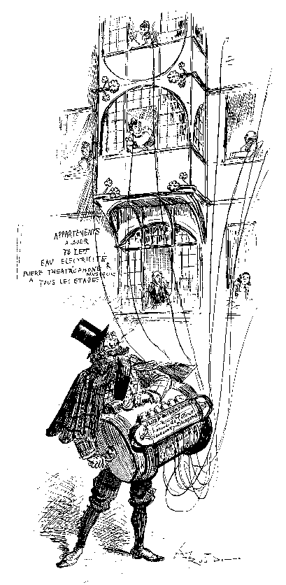 |
|
Il y aura dans tous les offices de journaux des halls énormes, des spoking-halls où les rédacteurs enregistreront à haute voix les nouvelles reçues; les dépêches arrivées téléphoniquement se trouveront immédiatement inscrites par un ingénieux appareil établi dans le récepteur de l’acoustique. Les cylindres obtenus seront clichés à grand nombre et mis à la poste en petites boîtes avant trois heures du matin, à moins que, par suite d’une |
|
entente avec la compagnie des téléphones, l’audition du journal ne puisse être portée à domicile par les fils particuliers des abonnés, ainsi que cela se pratique déjà pour les théâtrophones. » |
| 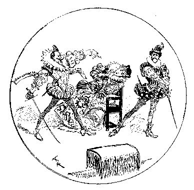 |
William Blackcross, l’aimable critique et esthète qui jusque-là avait bien voulu prêter attention à mon fantaisiste bavardage sans m’interrompre, jugea le moment opportun de m’interroger: «Permettez-moi de vous demander, dit-il, comment vous remplacerez l’illustration des livres? L’homme, qui est un éternel grand enfant, réclamera toujours des images et aimera à voir la représentation des choses qu’il imagine ou qu’on lui raconte. |
|
— Votre objection, repris-je, ne me démonte pas; l’illustration sera abondante et réaliste; elle pourra satisfaire les plus exigeants. Vous ignorez peut-être la grande découverte de demain, celle qui bientôt nous stupéfiera. Je veux parler du KINÉTOGRAPHE de Thomas Édison, dont j’ai pu voir les premiers essais à Orange-Park dans une récente visite faite au grand électricien près de New-Jersey. « Le KINÉTOGRAPHE enregistrera le mouvement de l’homme et le reproduira exactement comme le phonographe enregistre et reproduit sa voix. D’ici cinq ou six ans, vous apprécierez cette merveille basée sur la composition des gestes par la photographie instantanée ; le kinétographe |
|
sera donc l’illustrateur de la vie quotidienne. Non seulement nous le verrons fonctionner dans sa boîte, mais, par un système de glaces et de réflecteurs, toutes les figures actives qu’il représentera en photo-chromos pourront être projetées dans nos demeures sur de grands tableaux blancs. Les scènes des ouvrages fictifs et des romans d’aventures seront mimées par des figurants bien costumés et aussitôt reproduites; nous aurons également, comme complément au journal phonographique, les illustrations de chaque jour, des Tranches de vie active, comme nous disons aujourd’hui, fraîchement découpées dans l’actualité. On verra les pièces nouvelles, le théâtre et les acteurs aussi facilement qu’on les entend déjà chez soi; on aura le portrait et, mieux encore, la physionomie mouvante des hommes célèbres, des criminels, des jolies femmes; ce ne sera pas de l’art, il est vrai, mais au moins ce sera la vie elle-même, naturelle, sans maquillage, nette, précise et le plus souvent même cruelle. « Je vous répète, mes amis, que je ne conçois ici que d’incertaines possibilités. — Qui peut se vanter, en effet, parmi les plus subtils d’entre nous de prophétiser avec sagesse ? Les écrivains de ce temps, disait déjà notre cher Balzac, sont les manoeuvres d’un avenir caché par un rideau de plomb. Si Voltaire et Rousseau revoyaient la France actuelle, ils ne soupçonneraient guère les douze années qui furent, de 1789 à 1800, les langes de Napoléon. |
|
« Il est donc évident, dis-je, en terminant ce trop vague aperçu de la vie intellectuelle de demain, qu’il y aurait dans le résultat de ma fantaisie des côtés sombres encore imprévus. De même que les oculistes se sont multipliés depuis l’invention du Journalisme, de même avec la phonographie à venir, les médecins auristes foisonneront; on trouvera moyen |
| 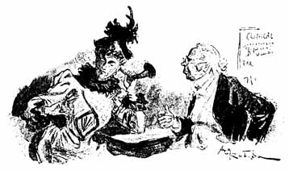 |
de noter toutes les sensibilités de l’oreille et de découvrir plus de noms de maladies auriculaires qu’il n’en existera réellement, mais aucun progrès ne s’est jamais accompli sans déplacer quelques-uns de nos maux; la médecine n’avance guère, elle spécule sur des modes et |
| des idées nouvelles qu'elle condamne lorsque des
générations en sont mortes dans l’amour du
changement. En tout cas, pour revenir dans les limites
mêmes de notre sujet, je crois que si les livres ont leur
destinée, cette destinée, plus que jamais, est
à la veille de s’accomplir, le livre imprimé
va disparaître. Ne sentez-vous pas que déjà
ses excès le condamnent ? Après nous la fin des
livres ! »
Cette boutade faite pour amuser notre souper eut quelque succès parmi mes indulgents auditeurs; les plus sceptiques pensaient qu’il pouvait bien y avoir quelque vérité dans cette prédiction instantanée, et John Pool obtint un hourra de gaieté et d’approbation lorsqu’il s’écria, au moment de nous séparer: « Il faut que les livres disparaissent ou qu’ils nous engloutissent; j’ai calculé qu’il paraît dans le monde entier quatre-vingts à cent mille ouvrages par an, qui tirés à mille en moyenne font plus de cent millions d’exemplaires, dont la plupart ne contiennent que les plus grandes extravagances et les plus folles chimères et ne propagent que préjugés et erreurs. Par notre état social, nous sommes obligés d’entendre tous les jours bien des sottises; un peu plus, un peu moins, ce ne sera pas dans la suite un bien gros excédent de souffrance, mais quel bonheur de n’avoir plus à en lire et de pouvoir enfin fermer ses yeux sur le néant des imprimés! » Jamais l’Hamlet de notre grand Will n’aura mieux dit : Words! Words! Words! Des mots!... des mots qui passent et qu’on ne lira plus. End of the Project Gutenberg Etext of "The End of Books" |